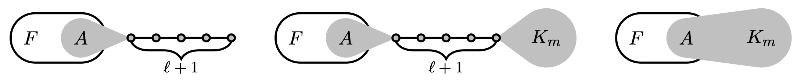
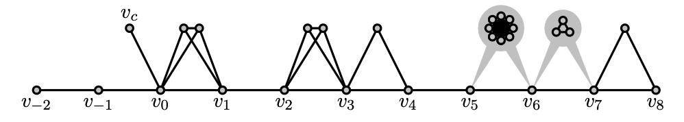

$\lambda^* = \sqrt{\beta}+1/\sqrt{\beta} = $ 2.019800887...
where $\beta$ is real root of $x^3 = x + 1$.
Forbidden subgraphs
Spherical two-distance sets
Adjacency matrix, and smallest eigenvalue
| $G$ | $A_G$ | $\lambda_1(G)$ |
| $K_n$ | $J - I$ | $-1$ |
Classification of graphs with bounded eigenvalues
$\mathcal{G}(\lambda) = \{$ graphs with smallest eigenvalue $\ge -\lambda \}$
Observation: Cauchy interlacing theorem implies
$\mathcal{G}(\lambda)$ is closed under taking subgraphs
* all subgraphs are induced
Question: Define $\mathcal{G}(\lambda)$ by forbidden subgraphs?
$\mathcal{G}(\lambda) = \{$ graphs with smallest eigenvalue $\ge -\lambda \}$
Question: Define $\mathcal{G}(\lambda)$ by forbidden subgraphs?
Simple case $\lambda < 1$
$\lambda_1(K_2) = -1$ hence $K_2 \not\in \mathcal{G}(\lambda)$
$\mathcal{G}(\lambda) = \{$ graphs with no edges $\}$
Tautology: Forbid all graphs outside $\mathcal{G}(\lambda)$
$\mathcal{G}(\lambda) = \{$ graphs with smallest eigenvalue $\ge -\lambda \}$
Bussemaker and Neumaier 1992: For which $\lambda \in \mathbb{R}$, can $\mathcal{G}(\lambda)$ be defined by finite forbidden subgraphs?
$\mathcal{G}(2)$ is complex; it contains all the line graphs
Cameron, Goethals, Seidel, and Shult: For every connected graph, it is in $\mathcal{G}(2)$ if and only if it is "generalized line graph" or "exceptional graph".
Kumar, Rao and Singhi: $\mathcal{G}(2)$ can be defined by forbidden subgraphs with $\le 10$ vertices
Bussemaker and Neumaier 1992: For which $\lambda \in \mathbb{R}$, can $\mathcal{G}(\lambda)$ be defined by finite forbidden subgraphs?
"however, these seem to be very difficult problems"

J. and Polyanskii 2022: For $\lambda < \lambda^* \approx 2.01980$, yes; otherwise, no.
Generalization to signed graphs
$\mathcal{G}^\pm(\lambda) = \{$ signed graphs with smallest e.v. $\ge -\lambda\}$
Question: Can $\mathcal{G}^\pm(\lambda)$ be defined by finite forbidden subgraphs?
J. and Polyanskii 2022: Yes if and only if $\lambda < \lambda^*$
$\mathcal{G}^\mp(\lambda) = \{$ signed graphs with largest e.v. $\le \lambda\}$
Question: Can $\mathcal{G}^\mp(\lambda)$ be defined by finite forbidden subgraphs?
Corollary Yes if and only if $\lambda < \lambda^*$
Application For every $λ < λ^*$, there exists $n_0$ s.t.
for every symmetric integer matrix$$A = \begin{bmatrix}0 & * & \dots & * \\ * & 0 & \dots & * \\ \vdots & \vdots & \ddots & \vdots \\ * & * & \cdots & 0 \end{bmatrix},$$$\lambda_1(A) \ge -λ$$\Leftarrow$$\Rightarrow$ for every principal submatrix $A_0$ of order at most $n_0$, $\lambda_1(A_0) \ge -λ$
Vijayakumar 1987: for $λ = 2$, $n_0 = 10$
Forbidden subgraphs
Spherical two-distance sets
Spherical two-distance sets
$\{ v_1, \dots, v_N \in \mathbb{R}^d \colon$ each $v_i$ is a unit vector
and $\langle v_i, v_j \rangle = \alpha$ or $\beta\}$
Fix $-1 \le \beta < 0 \le \alpha < 1$
$N_{\alpha, \beta}(d) = $ max size of spherical $\{\alpha,\beta\}$-code in $\mathbb{R}^d$
$N_{\alpha, \beta}(d) = $ max size of spherical $\{\alpha,\beta\}$-code in $\mathbb{R}^d$
Problem: Determine $N_{\alpha, \beta}(d)$ for large $d$
In particular, determine $\lim_{d \to \infty} N_{\alpha, \beta}(d)/d$
J., Tidor, Yao, Zhang, and Zhao 2021
For "equiangular" case $\beta = -\alpha$
$$N_{\alpha, -\alpha}(d) = \frac{k}{k-1}d + O(1)$$
where $k$ is "spectral radius order" of $\frac{1-\alpha}{2\alpha}$
$N_{\alpha, \beta}(d) = $ max size of spherical $\{\alpha,\beta\}$-code in $\mathbb{R}^d$
Problem: Determine $\lim_{d \to \infty} N_{\alpha, \beta}(d)/d$
J., Tidor, Yao, Zhang, Zhao 2022
- Lower bound on $N_{\alpha, \beta}(d)$, which depends only on $p := \lfloor -\alpha/\beta \rfloor + 1$ and $\lambda = \frac{1-\alpha}{\alpha-\beta}$
- Matching upper bound for large $d$ when $p \in \{1,2\}$ or $\lambda \in \{1, \sqrt2, \sqrt3\}$; e.g. $N_{2/5,-1/5}(d) = 3d + O(1)$
- Conjectured lower bound is tight for large $d$
How to get an upper bound on $N_{\alpha, \beta}(d)$?
Step 1: Associate a graph $G$ to a spherical $\{\alpha,\beta\}$-code
Step 2: There exists $\Delta$ s.t. $G$ after removing at most $\Delta$ vertices, is a $\Delta$-modification of a complete $p$-partite graph $K$
$\Delta$-modification means adding or removing up to $\Delta$ edges at each vertexStep 3: Obtain signed graph $G^\pm$ defined by $A_G - A_K$
Step 1: Associate a graph $G$ to a spherical $\{\alpha,\beta\}$-code
Step 2: There exists $\Delta$ s.t. $G$ after removing at most $\Delta$ vertices, is a $\Delta$-modification of a complete $p$-partite graph $K$
Step 3: Obtain signed graph $G^\pm$ defined by $A_G - A_K$
Forbidden subgraph framework
Given a finite family of $\mathcal{H}$ of signed graphs with largest eigenvalue $>\lambda$, can choose $\Delta$ s.t. $G^\pm$ does not contain any member in $\mathcal{H}$ as a subgraph
$\mathcal{G}^\mp(\lambda) = \{$ signed graphs with largest e.v. $\le \lambda\}$
$\mathcal{G}^\mp(\lambda)$ can be defined by finite forbidden signed subgraphs $\mathcal{H}$ if and only if $\lambda < \lambda^*$
Step 1: Associate a graph $G$ to a spherical $\{\alpha,\beta\}$-code
Step 2: There exists $\Delta$ s.t. $G$ after removing at most $\Delta$ vertices, is a $\Delta$-modification of a complete $p$-partite graph $K$
Step 3: Obtain signed graph $G^\pm$ defined by $A_G - A_K$
Forbidden subgraph framework
Given a finite family of $\mathcal{H}$ of signed graphs with largest eigenvalue $>\lambda$, can choose $\Delta$ s.t. $G^\pm$ does not contain any member in $\mathcal{H}$ as a subgraph
For $\lambda < \lambda^*$, can choose $\mathcal{H}$ and $\Delta$ s.t.
largest eigenvalue of $G^\pm$ is $\le \lambda$
J. and Polyanskii 2022: Matching upper bound for large $d$ when $\lambda < \lambda^*$
Proof technique
$\mathcal{G}(\lambda) = \{$ graphs with smallest eigenvalue $\ge -\lambda \}$
$\mathcal{G}(\lambda)$ can be defined by finite forbidden subgraphs
if and only if $\lambda < \lambda^* \approx 2.01980$
Two cases
$\lambda < \lambda^*$ and $\lambda \ge \lambda^*$
Case: For $\lambda < \lambda^*$, $\mathcal{G}(\lambda)$ can be defined by finite forbidden subgraphs
Step 1: Forbid $K_{1,5}$ because $\lambda_1(K_{1,5}) = -\sqrt{5}$
Step 2 (Ramsey-type result): For every $\ell, m$ and $F$, for every sufficiently large $K_{1,5}$-free connected graph $G$, if $G$ contains $F$, then $G$ contains"Forbidding $(\ell, m)$-extensions of $F$ effectively forbids $F$ itself in sufficiently large connected graphs"
Subcase: $2 \le \lambda < \lambda^*$
Step 1: Forbid $K_{1,5}$
Step 2: Forbidding $(\ell, m)$-extensions of $F$ effectively forbids $F$ itself in sufficiently large connected graphs
Step 3: Find $\ell, m$ such that all $(\ell, m)$-extensions of $F$ are disjoint from $\mathcal{G}(\lambda)$, for every minimal forbidden subgraph $F$ for "generalized line graphs"
Subcase: $2 \le \lambda < \lambda^*$
Step 1: Forbid $K_{1,5}$
Step 2: Forbidding $(\ell, m)$-extensions of $F$ effectively forbids $F$ itself in sufficiently large connected graphs
Step 3: Find $\ell, m$ such that all $(\ell, m)$-extensions of $F$ are disjoint from $\mathcal{G}(\lambda)$, for every minimal forbidden subgraph $F$ for "generalized line graphs"
Step 4: Forbid all these extensions
Subcase: $\lambda < 2$
Computationally simpler, but conceptually complicated
...
Last step uses non-effective Ramsey-type result
Dickson's lemma
The poset $(\mathbb{N}^n, ≤)$ does not contain infinite antichains
Case: For $\lambda \ge \lambda^*$, $\mathcal{G}(\lambda)$ cannot be defined by finite forbidden subgraphs
Observation: if $\mathcal{G}(\lambda)$ can be defined by finite forbidden subgraphs, then $\mathcal{G}(\lambda + \varepsilon) \setminus \mathcal{G}(\lambda) = \varnothing$ for some $\varepsilon$
Suffices to construct graphs to densely fill $(-\infty, -\lambda^*)$
Open problems
Problem A: Classify all the connected graphs with smallest eigenvalue in $(-λ^*,-2)$. In particular, classify those that have sufficiently many vertices.
Problem B: Same problem but for signed graphs
Problem C: Prove matching upper bound for $N_{\alpha, \beta}(d)$ when $p \ge 3$ and $\lambda \ge \lambda^*$. Breaking the $\lambda^*$ barrier.
Arizona State University
zilinj@asu.edu